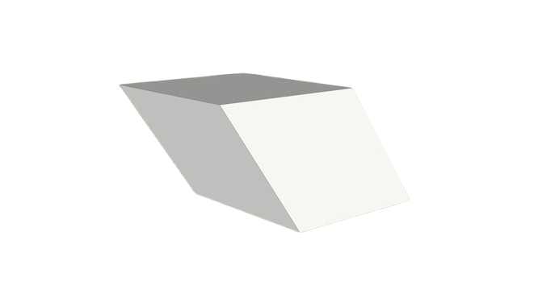

Romboedro
O Romboedro é um sólido geométrico pertencente à classe dos paralelepípedos, caracterizado por suas faces serem todas losangos congruentes. Ele possui 12 arestas, 8 vértices e 6 faces, sendo considerado uma figura tridimensional simétrica.
Quando as seis faces são congruentes ele é denominado romboedro trigonal.
Características do Romboedro
- Faces: As faces do romboedro são losangos, que têm todos os lados de mesma medida. Os ângulos opostos de cada face são congruentes, mas os ângulos adjacentes podem ser diferentes.
- Arestas: Possui 12 arestas, que são segmentos de reta conectando os vértices.
- Vértices: Existem 8 vértices no romboedro, onde se encontram três arestas.
- Simetria: O romboedro é um sólido altamente simétrico. Dependendo das medidas dos ângulos dos losangos, ele pode se tornar um cubo (quando os ângulos dos losangos são retos) ou ter formas mais achatadas ou alongadas.
O calculo de area do Romboedro consiste em :
Para calcular a área total de um romboedro, precisamos encontrar a área de um dos losangos (que representa uma face) e multiplicar pelo número total de faces (6).

Calculo da Área do Losango do Romboedro